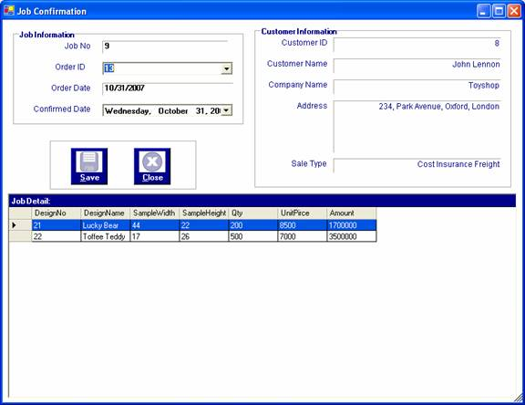

How to process Job
After you have successfully logged in to the system, you can enter the required data.
After you make an order, there is a job confirmation process to confirm the orders.
To store the job information, firstly, open the "Job Confirmation" form from the Process Menu Bar. When it is come out, choose the order ID. After the requried order is chosen, its relevant information is appeared to confirm the job but its confirmed date needs to be chosen for confirming the order.

To confirm that order, press "Save" button or "Alt+S" to store information of job as an order receipt.
After saving data, the following message will be appeared.
Saving the orders as jobs process can be done as many time as you like.
Finally, to close the Job Confirmation form, Press "Close" button or "Alt+C".